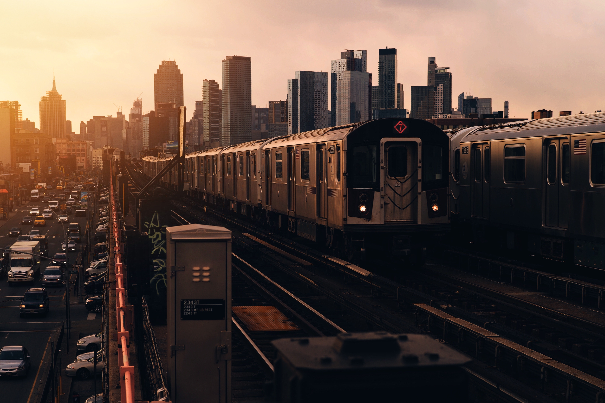
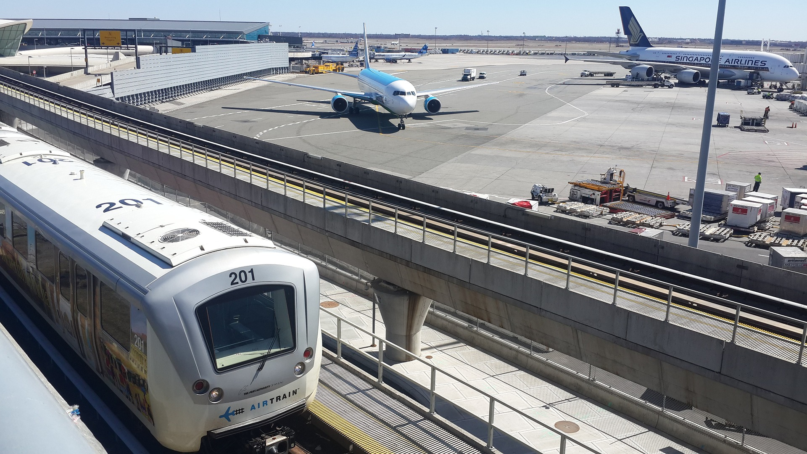
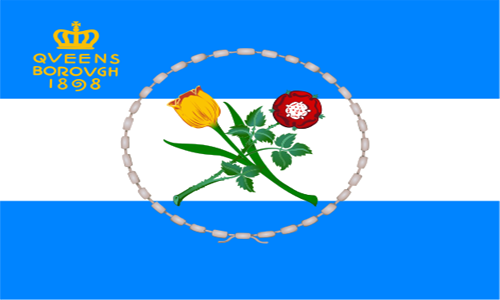

Queens is the largest borough in New York City. It was established in 1683 among 11 other original New York counties. It neighbors: the Bronx (north), Manhattan (northwest), Brooklyn (southwest), Staten Island (far southwest) and Long Island (east). A 2017 census estimated more than 2,350,000 people living in Queens, which ranks it second, preceded by Brooklyn, in highest population among NYC boroughs. Due to the large number of cultures Queens residents come from, it is considered one of the most ethnically diverse towns in the entire world. Queens is also home to JFK and Laguardia airports, two of the busiest in the world, USTA Billie Jean King National Tennis Center, where US Open tennis tournament is held, Citi Field, home to New York Mets, in addition to many other attractions, including museums, beaches, parks, restaurants, highways and more.
